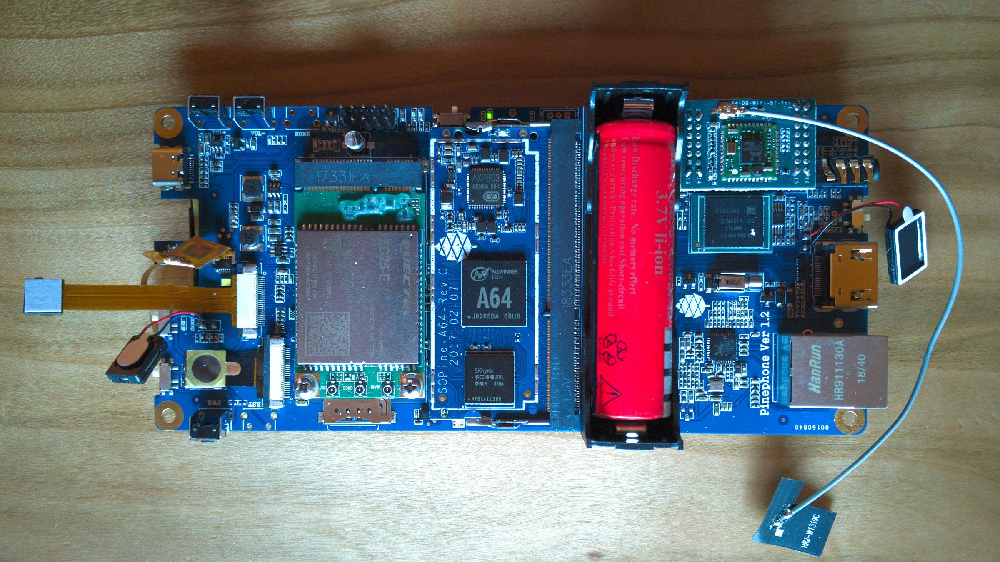

PINE64 Don't be evil devkit (pine64-dontbeevil)
|

The devkit for the PinePhone |
|
| Manufacturer | PINE64 |
|---|---|
| Name | Don't be evil (devkit) |
| Codename | pine64-dontbeevil |
| Released | 2019 |
| Category | testing |
| Original software | Linux 5.0.0 |
| Hardware | |
| Chipset | Allwinner A64 |
| CPU | 4x 1152 MHz Cortex-A53 |
| GPU | Mali-400 MP2 |
| Memory | 2 GB |
| Architecture | aarch64 |
| Non-Android based device | ✔ |
| Unixbench Whet/Dhry score | 706.5 |
{kind=link}
| USB Networking |
|
|---|---|
| Flashing |
Unavailable
|
| Touchscreen |
Partial
|
| Display |
Works
|
| WiFi |
Partial
|
| FDE |
Broken
|
| Mainline |
Works
|
| Battery |
Works
|
| 3D Acceleration |
Partial
|
| Audio |
Works
|
| Bluetooth |
Broken
|
| Camera |
Works
|
| GPS |
Works
|
| Mobile data |
Works
|
| SMS |
Broken
|
| Calls |
Broken
|
| USB OTG |
Broken
|
| NFC |
|
| Accelerometer |
Works
|
|---|---|
| Magnetometer |
|
| Ambient Light |
|
| Proximity |
|
| Hall Effect |
|
| Barometer |
|
| Power Sensor |
|
| Keyboard |
|
|---|---|
| Touchpad |
|
| USB-A |
|
| HDMI/DP |
|
| Ir TX |
|
| TrustZone |
|
| FOSS bootloader |
|
Contents
Contributors
Serial console
There is a 3.3V uart on the 2x5pin connector near the modem. The pin in the corner toward VOL- is GND and the next pin is TX.
{kind=link}
The baudrate in u-boot and in Linux is 115200n8
On a functional devkit with a pmos SD card inserted you should get the standard u-boot console messages on the serial port as soon as you power the devkit on, and after that the linux kernel messages.
Components
| Component | Model | Driver |
|---|---|---|
| Touchscreen | FocalTech FT6336GU | TOUCHSCREEN_EDT_FT5X06 |
| Rear camera | OmniVision OV5640 | VIDEO_OV5640 |
| Camera flash | SGMICRO SGM3140 | LEDS_SGM3140 |
| Front camera | GalaxyCore GC2145 | Nope |
| LCD | fitipower JD9365D | DRM_PANEL_PINEPHONE_JD9365DA |
| WiFi | Realtek RTL8723BS | RTL8723BS |
| Bluetooth | Realtek RTL8723BS | BT_HCIUART_RTL |
| Modem | Quectel EC25-E | USB_NET_QMI_WWAN |
| GNSS/GPS | Quectel EC25-E | CONFIG_USB_SERIAL_OPTION |
| Magnetometer | ST LIS3MDL | IIO_ST_MAGN_3AXIS |
| Ambient light / Proximity | SensorTek STK3335 | STK3310 |
| Sixaxis | InvenSense MPU-6050 | INV_MPU6050_I2C |
| Vibration motor | ? | INPUT_GPIO_VIBRA |
| Notification LED | LED0603RGB | LEDS_GPIO |
| Volume buttons | Buttons connected to the KEYADC | KEYBOARD_SUN4I_LRADC |
| Power button | X-Powers AXP803 | INPUT_AXP20X_PEK |
| Battery fuel gauge | X-Powers AXP803 | BATTERY_AXP20X |
Touchscreen
The touchscreen is controlled by the
edt_ft5x06
module on i2c-0. The current issue is that it takes a long while before the i2c-0 bus works after booting. For some reason it takes ~110 seconds before communication is possible. This causes an issue because the module tries to probe the touchscreen before the bus works.
The current workaround is to build
edt_ft5x06
as a module and rmmod/modprobe the module after the i2c-0 bus works so it gets probed again.
[ 17.942111] edt_ft5x06 0-0038: touchscreen probe failed
...after rmmod edt_ft5x06; modprobe edt_ft5x06...
[ 3989.326377] input: generic ft5x06 (12) as /devices/platform/soc/1c2ac00.i2c/i2c-0/0-0038/input/input2
The communication to the touchscreen controller is only possible when power is supplied the the 4G modem using the hardware switch (the light should be off) since the power rail for the 4G modem is used as pull-up for the i2c bus that connects the touchscreen controller to the sopine.
Cameras
The camera's both share the csi-0 bus. Currently only the rear camera (OV5640) has mainline linux support.
It's also not clear how the camera switching would work on the software side, maybe Linux just deals with it if the device tree nodes for the second camera get added.
The camera hardware pipeline is controlled with
/dev/media0
and
media-ctl
, the result is on
/dev/video0
pine-dontbeevil:~# media-ctl --set-v4l2 '"ov5640 2-003c":0[fmt:UYVY8_2X8/1280x720]'
pine-dontbeevil:~# ffmpeg -s 1280x720 -f video4linux2 -i /dev/video0 -vframes 1 selfie.jpg
{kind=link}
Camera Flash
The camera flash consist out of a SG Micro SGM3140 "500mA Buck/Boost Charge Pump LED Driver" and a EHP-C04 LED.
The driver supports Flash and Torch mode, the first being brighter but only for about 300ms, when it switches to Torch mode. Torch mode is lower brightness but can be turned on continuously.
# Turn on Flash, wait 0.3s, turn off
echo 1 > /sys/class/leds/sgm3140-flash/flash_strobe
sleep 0.3
echo 0 > /sys/class/leds/sgm3140-flash/flash_strobe
# Turn on Torch
echo 1 > /sys/class/leds/sgm3140-flash/brightness
# Turn off Torch
echo 0 > /sys/class/leds/sgm3140-flash/flash_strobe
WiFi
WiFi generally works but the driver is quite sporadic when it wants to work. Rebooting/rmmod and modprobe'ing the driver/rfkill block - unblock helps.
[ 1962.148414] RTL8723BS: set bssid:e4:8d:8c:49:44:e2
[ 1962.148468] RTL8723BS: set ssid [BrixIT] fw_state = 0x00000088
[ 1962.159624] RTL8723BS: start auth
[ 1962.161053] RTL8723BS: auth success, start assoc
[ 1972.568295] RTL8723BS: set bssid:00:00:00:00:00:00
[ 1985.233165] RTL8723BS: set bssid:e4:8d:8c:49:44:e2
[ 1985.233228] RTL8723BS: set ssid [BrixIT] fw_state = 0x00000088
[ 1985.304510] RTL8723BS: start auth
[ 1985.306184] RTL8723BS: auth success, start assoc
[ 1995.657207] RTL8723BS: set bssid:00:00:00:00:00:00
[ 2006.185941] RTL8723BS: set bssid:e4:8d:8c:49:44:e2
[ 2006.185994] RTL8723BS: set ssid [BrixIT] fw_state = 0x00000088
[ 2006.193313] RTL8723BS: start auth
[ 2006.194839] RTL8723BS: auth success, start assoc
[ 2010.497801] RTL8723BS: set bssid:00:00:00:00:00:00
Bluetooth
There is a patch series on lkml. A v2 for this series is in progress.
Modem
Receiving text messages works. Calls should work too but weren't tested yet.
Sensors
All sensors work and are accessible as Industrial I/O (iio) devices in linux. To query the data you can cat the files in `/sys/bus/iio/` to make the kernel module query the sensors
dontbeevil:~# cat /sys/bus/iio/devices/iio\:device0/name
mpu6050
dontbeevil:~# cat /sys/bus/iio/devices/iio\:device0/in_accel_z_raw
-17594
dontbeevil:~# echo "Verified gravity still exists"
RGB Led
The RGB led works with the led driver, but due to hardware bugs there can be only one led active at the same time and the blue led doesn't work because some pins are reversed.
# Activate LED
echo 1 > /sys/class/leds/$COLOR/brightness
# Deactivate LED
echo 0 > /sys/class/leds/$COLOR/brightness
Audio
Speakers
Sound output should work after unmuting
AIF1 Slot 0 digital
Mic
Doesn't work yet.
USB
Doesn't work for MartijnBraam, reported to work for other people.
See also
- pmaports!308 Initial merge request